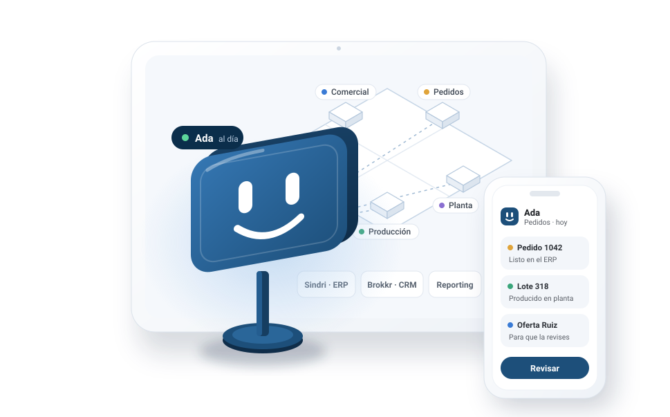

Data analyst and developer · Alicante, Spain
I automate processes and put AI to work on business data.
I’m Henry Arce, founder of Arce Data Lab. I find the manual tasks in a team, turn them into workflows, assistants and reports, and measure what is gained.